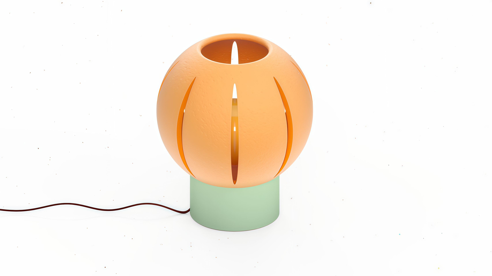

LUMORA
Lumora es una lámpara artesanal realizada en cerámica, concebida como una pieza que combina tradición material y diseño contemporáneo, inspirada en la naranja de Valencia.
A través del estudio formal y de la difusión de la luz, se busca una iluminación cálida que refuerce tanto el carácter funcional como emocional del objeto.